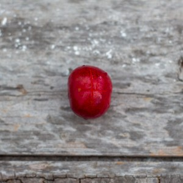
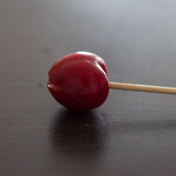
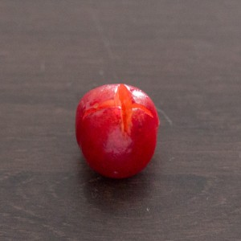
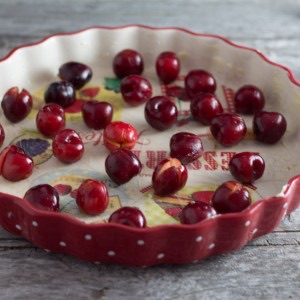
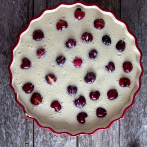

Clafoutis aux cerises

Aujourd’hui je vous propose un petit dessert (goûter ou même petit-déjeuner), rapide simple et que tout le monde (ou presque) adore puisqu’il s’agit de la recette du clafoutis aux cerises.
A chaque fois que j’achète des cerises je ne sais pas vous, mais moi je suis toujours effarée par le prix!! C’est quand même fou que le fruit que presque tout le monde a (ou peut avoir) dans son jardin puisse être aussi cher! Bon tout le monde n’a pas un cerisier mais bon quand même je trouve ça horriblement cher et c’est d’autant plus dommage car certains n’en achètent pas pour cette raison et c’est pourtant absolument incontournable (enfin moi j’adore ça) en cette période de l’année. En ce qui me concerne je fais partie de ces personnes qui n’achètent pas de cerises pour les raisons expliquées plus haut mais j’ai de la chance car un voisin m’en a donné un gros panier 😉 et j’ai pu faire un délicieux clafoutis aux cerises. Le clafoutis, c’est « le » gâteau qui se mange sans faim à n’importe quel moment de la journée car pas du tout bourratif et surtout très bon aussi bien tiède que froid. Pour ceux qui ne connaissent pas, le clafoutis aux cerises est un gâteau composé d’une préparation similaire à celle d’un flan et évidemment de cerises. A la place des cerises vous pouvez tout à fait mettre n’importe quels autres fruits ça marche très bien aussi. Personnellement, ce que je préfère c’est de le déguster quand il est encore tiède et si vous avez la possibilité de faire cette recette avec une gousse de vanille plutôt qu’avec de l’extrait c’est encore meilleur (enfin moi j’adore quand on sent bien le goût de la vanille). Allez, maintenant je vous laisse avec la recette!
Ingrédients
- Farine - 130g
- Sucre - 150g
- Lait - 400ml
- Oeufs - 4
- Beurre salé - 30g
- Cerises - 500g
- Extrait de vanille - 1 bouchon
Instructions
- Laver les cerises et les dénoyauter Petite astuce pour dénoyauter des cerises : Faire une entaille en forme d’étoile sur le bas de la cerise et à l'aide d'un pic en bois pousser le noyau par le côté opposé (là ou se trouve normalement la queue de la cerise) et vous verrez le noyau sortir par l'entaille. Bon je ne sais pas si c'est vraiment très clair mais dur dur d'expliquer ça à l'écrit...
- Faire chauffer le lait
- Quand le lait est chaud, verser l'extrait de vanille et mélanger
- Ajouter le beurre et laissez le fondre
- Dans un saladier, battre les œufs
- Ajouter le sucre tout en continuant de fouetter (pendant 5 bonnes minutes)
- Ajouter la farine tamisée et mélanger jusqu'à obtenir un mélange bien homogène
- Verser le lait sur la préparation et mélanger
- Beurrer un plat (type plat à tarte)
- Préchauffer le four à 210°
- Disposer les cerises un peu partout dans votre plat
- Verser la préparation sur les cerises
- Enfourner pendant 25 minutes en surveillant de temps en temps
- Laisser refroidir avant de servir et si vous en avez envie, saupoudrer de sucre glace!





Les tips de la communauté
Classique très apprécié. Plusieurs retours positifs de testeurs. Principal débat : conserver ou retirer les noyaux. Quelques problèmes de cuisson signalés selon la puissance du four.
Astuces
- Retirer les noyaux pour la sécurité surtout en famille (risque de casser une dent)
- Simple mais efficace - ne pas surcharger la recette
- Conseil sur le dénoyautage : utiliser un appareil ou une épingle
- Les cerises fraiches du mois de juin donnent le meilleur résultat
Variantes suggérées
- Peut se faire avec des framboises (les décongeler au préalable)
- Essayer d'autres fruits rouges de saison
- Laisser les noyaux pour la tradition corrézienne (plus de saveur)
Ajustements signalés
- Attention à la température du four - peut varier considérablement selon les appareils, surveiller la cuisson
- Cerises qui perdent leur jus si dénoyautées - conserver 1kg pour un moule 22cm si on garde les noyaux